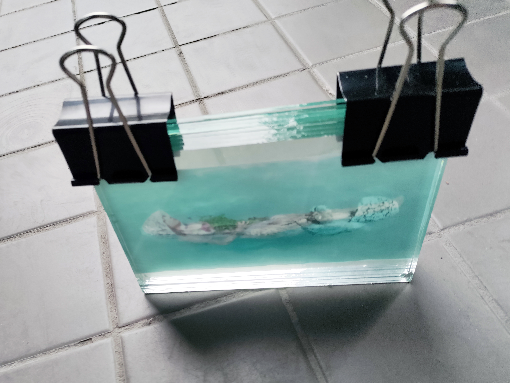
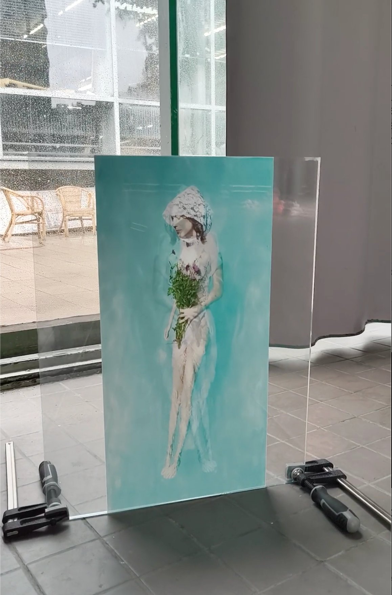
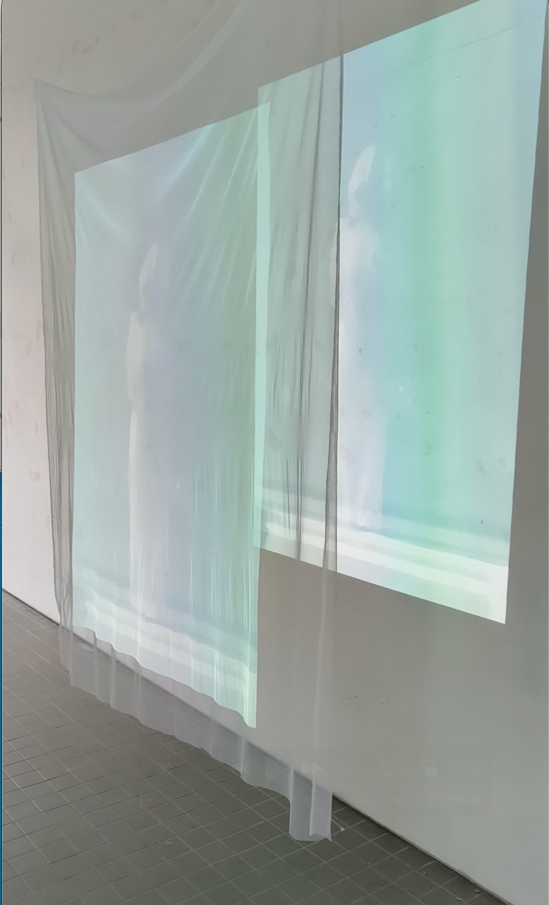

Becoming
A beamed projection passes through mesh fabric on the wall, casting two images of a reflection in a pool of a woman standing in a wedding dress.
Three times over, a photograph of a woman floating in water, Ophelia-like, wearing a layer of a wedding dress, holding a bouquet of flowers, placed between eight layers of glass. On the reverse side is a mirrored image. When the light falls through the glass, the image transfers to a woman standing. A different version.
For many women today, marriage still marks the end of an existence; the moment they become the property of their husband. But there is also rebirth. Water speaks of new beginnings; we all begin by growing in amniotic fluid. When the light falls through the glass, it is not a woman floating, yet someone standing, a different version.


